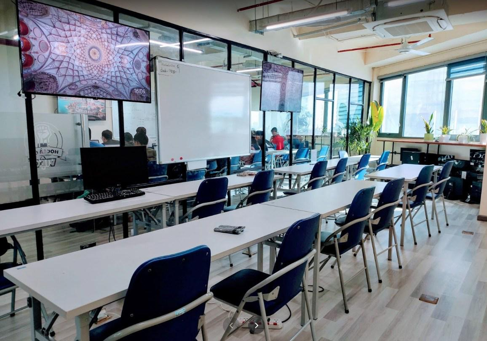

11 tháng 05, 2022
Xin chào các anh/ chị yêu thích giảng dạy lĩnh vực CNTT
Website chính thức:
https://techmaster.vn/
Giới thiệu về trung tâm Techmaster:
https://techmaster.vn/trungtam/trung-tam.
Slogan “Học là có việc”.
Hiện tại các khóa Lộ trình Java Spring Boot dài hạn 7 tháng https://java.techmaster.vn/ với các môn học chính: Java core, Cấu trúc dữ liệu và giải thuật, Database, Spring Boot đang rất cần bổ sung giảng viên cho các khóa học sắp tới. Nếu anh chị có thời gian rảnh buổi tối và mong muốn thử sức mình trong vai trò mới “giảng viên”, hãy liên hệ với chúng tôi.

Giảng dạy 1 tuần 2- 3 buổi khung giờ 18:30 - 21:30. Chấm, chữa bài tập, giải đáp thắc mắc cho học viên. Khóa học đã có đầy đủ giáo trình, giảng viên mới không phải soạn giáo trình mà chỉ khuyến khích góp ý, bổ sung thêm các ví dụ mẫu. Giảng viên chủ động sắp xếp công việc và đăng kí lịch dạy theo từng lớp.
Yêu cầu: có ít nhất 2 năm kinh nghiệm trong lĩnh vực sẽ tham gia giảng dạy.
Anh/ chị vui lòng điền các thông tin vào form đăng kí https://forms.gle/4Q3pr4FwfQUsdc4s8.
Techmaster sẽ liên hệ hẹn lịch phỏng vấn sớm nhất có thể. Sau khi pass phỏng vấn, anh chị sẽ tham gia chương trình đào tạo giảng viên mới của Techmaster!
Niềm vui khi một học viên hoàn thành khóa học, tìm được việc làm, gửi lời cảm ơn thầy cô, thực sự khó diễn tả thành lời. Mong sớm được chào đón anh chị tại các lớp học của Techmaster.
trân trọng.
techmaster team.
Liên hệ trực tiếp: Ms Huong - 0382416368 - huong@techmaster.vn